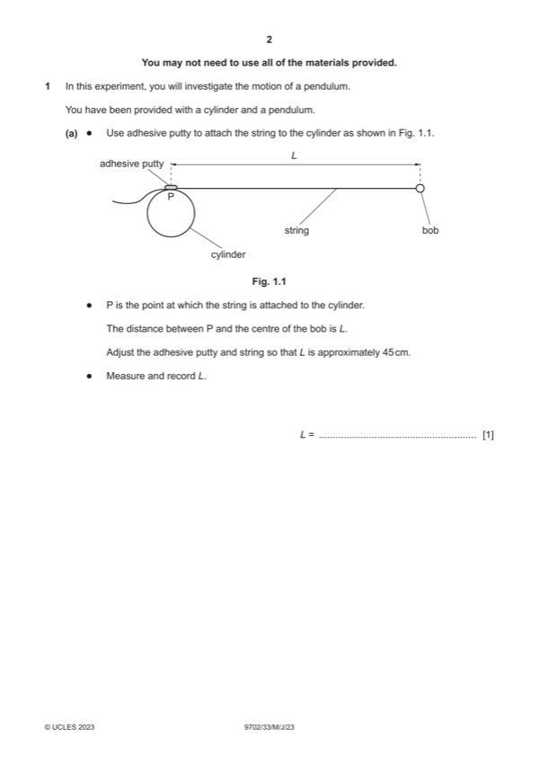

Question 1

Original paper page 2
Part 1(a) — solution
Value of L in the range 40.0–50.0 cm with consistent unit. 1
Mark points
- Include the ideas shown in the solution above.
Part 1(b) — solution
Value of T in the range 1.0–1.5 s with unit. 1
Evidence of repeats of nT where n ⩾ 5. 1
Mark points
- Include the ideas shown in the solution above.
Part 1(c) — solution
- The presentation of quantity and unit conforms to scientific convention e.g. T 3 / s3 and L2 / m2
Mark points
- The presentation of quantity and unit conforms to scientific convention e.g. T 3 / s3 and L2 / m2
Part 1(d)(i) — solution
Axes: 1
Axes must be labelled with the correct quantities.
Scales must be chosen so that the plotted points occupy at least half the graph grid in both x and y directions.
Scale markings are no more than 2 cm apart (one large square).
Sensible scales must be used. Scale must not be awkward (e.g. 3:10 or fractions).
Plotting of points: 1
All observations in the table must be plotted on the grid.
Diameter of plotted points must be less than half a small square.
Points must be plotted to an accuracy of half a small square in both x and y directions.
Quality: 1
Trend of points must be positive.
All points in the table must be plotted on the grid.
It must be possible to draw a straight line that is within 0.02 m2 (200 cm2) on the L2 axis of all plotted points.
Mark points
- Include the ideas shown in the solution above.
Part 1(d)(ii) — solution
Line of best fit: 1
‘Best fit’ is judged by balance of all points on the grid (at least 5 points) about the candidate’s line. There must be an even
distribution of points either side of the line along the full length.
Lines must not be kinked or thicker than half a small square.
Some candidates may choose to identify an anomalous point. If they identify one point as anomalous (e.g. by circling or
labelling) then this point is to be disregarded when judging the line of best fit. There must be at least 5 points left after the
anomalous point is disregarded.
2023 Page 7 of 10
9702/33 Cambridge International AS & A Level – Mark Scheme May/June 2023
Mark points
- Include the ideas shown in the solution above.
Part 1(d)(iii) — solution
- Intercept read directly from the graph, with read-off at L2 = 0, accurate to half a small square in y direction
- Correct read-off from a point on the line and substituted correctly into y = mx + c or an equivalent expression
Mark points
- Intercept read directly from the graph, with read-off at L2 = 0, accurate to half a small square in y direction
- Correct read-off from a point on the line and substituted correctly into y = mx + c or an equivalent expression
Part 1(e) — solution
- Value of E = candidate’s gradient and value of F = candidate’s intercept. 1
- Units for E consistent with readings: s3 m–2 or s3 cm–2 1
- units for F: s3
Mark points
- Value of E = candidate’s gradient and value of F = candidate’s intercept. 1
- Units for E consistent with readings: s3 m–2 or s3 cm–2 1
- units for F: s3
Part 1 — solution
mark for each point up to a maximum of 4.
Mark points
- Include the ideas shown in the solution above.
Part 1 — solution
mark for each point up to a maximum of 4.
2023 Page 10 of 10
Mark points
- Include the ideas shown in the solution above.